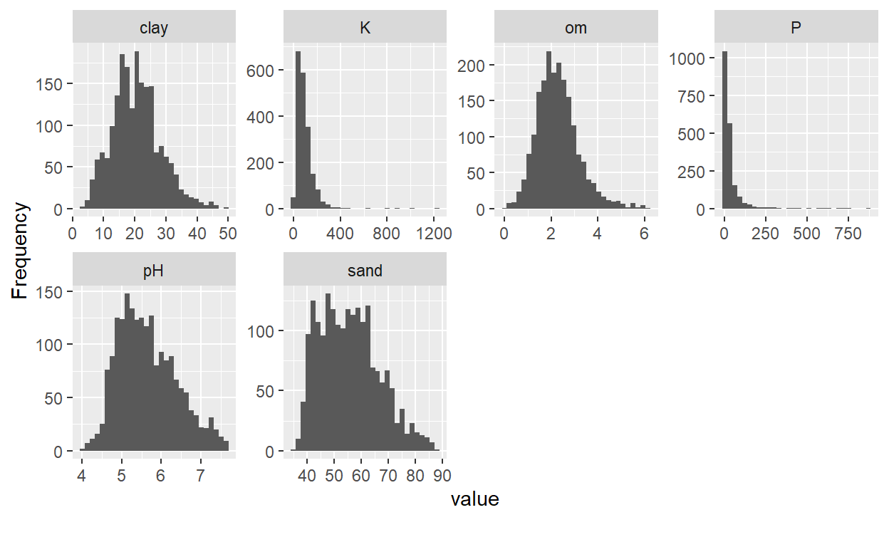
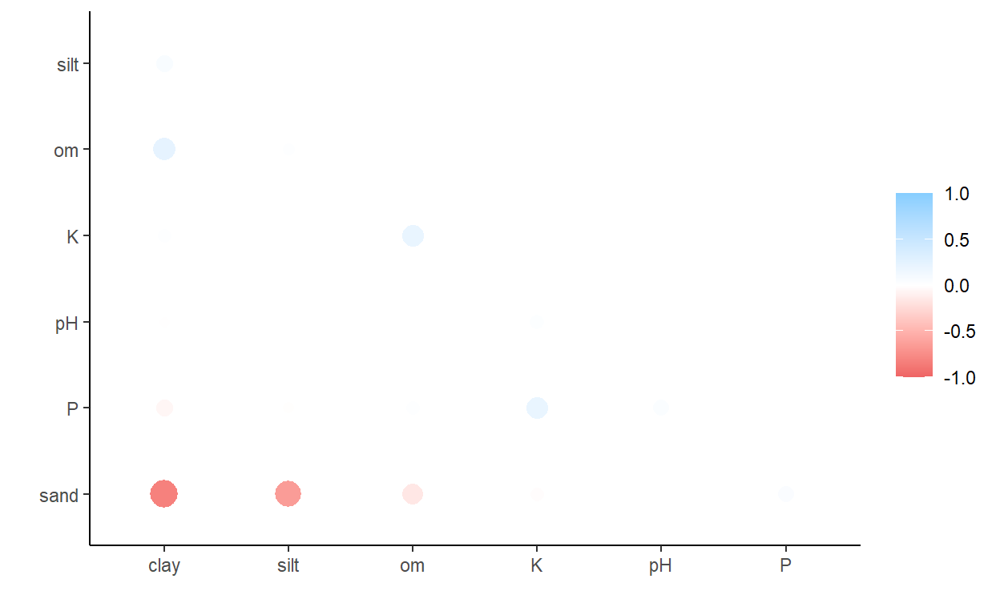

Introduction
The project of soil profiles collected from rice planting areas in the north of Thailand was established from 2016 - 2019. The details will be shown below.
Reveal of data
# load library
library(here)
library(tidyverse)
library(tidyr)
library(recipes)
library(corrplot)
library(ggpubr)
library(Rmisc)
library(vegan)
library(ggpubr)
library(GGally)
library(RColorBrewer)
database <- read_csv(
file = here::here("_posts", "2021-04-20-soil-analysis" ,"data", "database.csv")
)
#glimpse(database) # if you want to see the original data
Then, we should remove columns containing Thai letter due to not supported by R
database.cleaned <- database %>%
select(-run,
-`lab no`,
-transplant,
-var,
-tam,
-amphoe,
-prov,
-seriesname,
-from) %>%
mutate(
pH = as.numeric(pH),
om = as.numeric(om),
P = as.numeric(P),
K = as.numeric(K),
sand = as.numeric(sand),
silt = as.numeric(silt),
clay = as.numeric(clay),
texture = as.factor(texture),
soilseries = as.factor(soilseries),
suit = as.factor(suit),
text.code = as.factor(text.code),
se.tex = as.factor(se.tex)
)
database.cleaned
# A tibble: 1,964 x 15
pH om P K sand silt clay texture no x1
<dbl> <dbl> <dbl> <dbl> <dbl> <dbl> <dbl> <fct> <dbl> <dbl>
1 6.01 2.73 35 133 46.4 33.7 19.9 loam 554 701861
2 5.89 2.92 31 119 46.6 33.6 19.8 loam 555 701861
3 4.54 2.85 37 102 45 31.6 23.4 loam 1019 639483
4 4.93 1.93 15 92 50 28 22 loam 1888 521167
5 6.51 3.05 71 142 48.5 29.5 22 loam 1475 624104
6 6.51 3.05 71 142 48.5 29.5 22 loam 1476 624104
7 5.44 4.07 19 107 42.4 37.6 20 loam 2030 535134
8 5.1 0.93 9 94 78.8 13.6 7.6 loamy sand 1965 512267
9 5.65 1.19 6 95 84 10 6 loamy sand 1977 512097
10 6.2 1.29 7 45 78 14 8 loamy sand 1978 512097
# ... with 1,954 more rows, and 5 more variables: y1 <dbl>,
# soilseries <fct>, suit <fct>, text.code <fct>, se.tex <fct>EDA
Shall we look at data distribution of each variables by histograms.
library(DataExplorer)
database.cleaned %>%
select(pH, om, P, K, sand, clay) %>%
plot_histogram() + facet_grid(soilseries ~ text.code)

NULLClay, OM, pH and sand were all tend to be normal distributed except K and P. So, in any soil types, pH was not vary.
To compare soil properties in each of suitable soil levels. I would rather to show mean of each factor with 95%CI errorbar.
my_sum_suit <- database.cleaned %>%
select(pH, om, P, K, sand, silt, clay, suit) %>%
gather(key = "soil_prop", value = "measurement",-suit) %>%
summarySE(
measurevar = "measurement",
groupvars = c("suit", "soil_prop"),
conf.interval = 0.95,
na.rm = TRUE,
.drop = TRUE
)
my_sum_suit %>% ggplot(aes(x = suit, y = measurement)) +
geom_point(size = 2) +
geom_errorbar(width = 0, size = 1, aes(
ymin = measurement - ci,
ymax = measurement + ci
)) +
facet_wrap(~soil_prop, scales = "free") + theme_bw()

Here take a look soil properties at each soil series
my_sum_soilseries <- database.cleaned %>%
select(pH, om, P, K, sand, silt, clay, soilseries, text.code) %>%
gather(key = "soil_prop", value = "measurement", -soilseries, - text.code) %>%
summarySE(
measurevar = "measurement",
groupvars = c("soilseries", "soil_prop", "text.code"),
conf.interval = 0.95,
na.rm = TRUE,
.drop = TRUE
)
my_sum_soilseries %>% ggplot(aes(x = soilseries, y = measurement)) +
geom_point(size = 2) +
geom_errorbar(width = 0,
size = 1,
aes(ymin = measurement - ci,
ymax = measurement + ci)) +
facet_grid(soil_prop ~ text.code , scales = "free") + theme_bw()

##Check correlation of each parameters
database.cleaned %>%
select(pH, om, P, K, sand, clay, suit) %>%
GGally::ggpairs(aes(color = suit),
columns = c("pH", "om",
"P", "K", "sand", "clay")) + scale_color_brewer(palette = "Spectral") +
scale_fill_brewer(palette = "Spectral")

database.cleaned %>%
select(pH, om, P, K, sand, clay) %>%
plot_correlation()

Again!
library(lsr)
library(corrr)
database.cleaned %>% select(pH:clay) %>%
correlate() %>%
rearrange() %>%
shave() %>%
rplot()

pH is not very affected on any factor in soil properties. om is likely to related to clay, sand, and K. P is related to K. K is related to om, and P. sand is negatively related to clay, and om. clay is related to sand and om. we can ignore pH in the analysis.
Intra- and interspecific variation Exploration of soil types
How to find the get fractional of varaince explained from ANOVA which is multiple R square at https://www.sfu.ca/~jackd/Stat302/Wk07-1_Full.pdf
#follow thai papaer Intra- and interspecific variation in wood density and fine-scale spatial distribution of stand-level wood density in a northern Thai tropical monta
# at pH
lm(pH ~ suit, data = database.cleaned) %>% summary() # check at Multiple R square 0.01164
Call:
lm(formula = pH ~ suit, data = database.cleaned)
Residuals:
Min 1Q Median 3Q Max
-1.6746 -0.5564 -0.1006 0.4794 2.1094
Coefficients:
Estimate Std. Error t value Pr(>|t|)
(Intercept) 5.694595 0.041555 137.039 < 2e-16 ***
suitS1 0.001852 0.048274 0.038 0.969393
suitS2 -0.184049 0.052980 -3.474 0.000524 ***
suitS3 -0.017231 0.060440 -0.285 0.775607
---
Signif. codes: 0 '***' 0.001 '**' 0.01 '*' 0.05 '.' 0.1 ' ' 1
Residual standard error: 0.7305 on 1960 degrees of freedom
Multiple R-squared: 0.01164, Adjusted R-squared: 0.01013
F-statistic: 7.693 on 3 and 1960 DF, p-value: 4.135e-05
Call:
lm(formula = pH ~ soilseries, data = database.cleaned)
Residuals:
Min 1Q Median 3Q Max
-1.67257 -0.50959 -0.07758 0.43985 2.07368
Coefficients:
Estimate Std. Error t value Pr(>|t|)
(Intercept) 5.80312 0.10222 56.773 < 2e-16 ***
soilseriesCr -0.55201 0.19573 -2.820 0.00485 **
soilseriesHc -0.36719 0.16162 -2.272 0.02320 *
soilseriesHd -0.05469 0.11060 -0.494 0.62102
soilseriesKp 0.02945 0.11845 0.249 0.80370
soilseriesLp 0.06604 0.11428 0.578 0.56341
soilseriesLy -0.95713 0.33279 -2.876 0.00407 **
soilseriesMi -0.34812 0.36855 -0.945 0.34499
soilseriesMkn -0.17370 0.13271 -1.309 0.19075
soilseriesMr -0.04093 0.15060 -0.272 0.78582
soilseriesMs 0.12560 0.14532 0.864 0.38755
soilseriesMt -0.21365 0.19195 -1.113 0.26581
soilseriesMta -0.21207 0.19195 -1.105 0.26936
soilseriesNa -0.34165 0.11689 -2.923 0.00351 **
soilseriesPae 0.02941 0.13090 0.225 0.82227
soilseriesPh -0.62225 0.11568 -5.379 8.39e-08 ***
soilseriesSai -0.29078 0.11539 -2.520 0.01181 *
soilseriesSC -0.17146 0.22856 -0.750 0.45325
soilseriesSkt -0.25066 0.11707 -2.141 0.03239 *
soilseriesSp -0.28681 0.19195 -1.494 0.13528
soilseriesTph -0.01640 0.11614 -0.141 0.88773
soilseriesU 0.02354 0.14695 0.160 0.87273
soilseriesWch -0.13312 0.18528 -0.718 0.47254
soilseriesWs -0.10585 0.13988 -0.757 0.44930
---
Signif. codes: 0 '***' 0.001 '**' 0.01 '*' 0.05 '.' 0.1 ' ' 1
Residual standard error: 0.7082 on 1940 degrees of freedom
Multiple R-squared: 0.08051, Adjusted R-squared: 0.0696
F-statistic: 7.385 on 23 and 1940 DF, p-value: < 2.2e-16
Call:
lm(formula = om ~ suit, data = database.cleaned)
Residuals:
Min 1Q Median 3Q Max
-2.2023 -0.6024 -0.0714 0.4651 3.8047
Coefficients:
Estimate Std. Error t value Pr(>|t|)
(Intercept) 2.15834 0.05027 42.936 < 2e-16 ***
suitS1 0.25306 0.05840 4.333 1.54e-05 ***
suitS2 -0.01309 0.06409 -0.204 0.838
suitS3 0.10391 0.07312 1.421 0.155
---
Signif. codes: 0 '***' 0.001 '**' 0.01 '*' 0.05 '.' 0.1 ' ' 1
Residual standard error: 0.8836 on 1960 degrees of freedom
Multiple R-squared: 0.01851, Adjusted R-squared: 0.01701
F-statistic: 12.32 on 3 and 1960 DF, p-value: 5.492e-08
Call:
lm(formula = om ~ soilseries, data = database.cleaned)
Residuals:
Min 1Q Median 3Q Max
-2.7440 -0.5383 -0.0507 0.4660 3.8898
Coefficients:
Estimate Std. Error t value Pr(>|t|)
(Intercept) 2.07393 0.11971 17.325 < 2e-16 ***
soilseriesCr 1.07820 0.22923 4.704 2.74e-06 ***
soilseriesHc 0.03148 0.18928 0.166 0.867924
soilseriesHd 0.73004 0.12953 5.636 2.00e-08 ***
soilseriesKp 0.09420 0.13872 0.679 0.497196
soilseriesLp -0.03009 0.13384 -0.225 0.822163
soilseriesLy 0.81078 0.38975 2.080 0.037633 *
soilseriesMi 1.25694 0.43162 2.912 0.003631 **
soilseriesMkn 0.57655 0.15543 3.710 0.000214 ***
soilseriesMr -0.12112 0.17637 -0.687 0.492353
soilseriesMs 0.41476 0.17019 2.437 0.014900 *
soilseriesMt -0.02400 0.22480 -0.107 0.914972
soilseriesMta -0.48183 0.22480 -2.143 0.032208 *
soilseriesNa 0.05475 0.13689 0.400 0.689252
soilseriesPae -0.32207 0.15330 -2.101 0.035784 *
soilseriesPh 0.33459 0.13547 2.470 0.013606 *
soilseriesSai 0.01191 0.13513 0.088 0.929797
soilseriesSC -0.15873 0.26768 -0.593 0.553257
soilseriesSkt 0.01878 0.13710 0.137 0.891043
soilseriesSp -0.17775 0.22480 -0.791 0.429213
soilseriesTph 0.05083 0.13601 0.374 0.708674
soilseriesU 0.82474 0.17209 4.792 1.77e-06 ***
soilseriesWch 1.21369 0.21699 5.593 2.55e-08 ***
soilseriesWs 0.22188 0.16382 1.354 0.175771
---
Signif. codes: 0 '***' 0.001 '**' 0.01 '*' 0.05 '.' 0.1 ' ' 1
Residual standard error: 0.8294 on 1940 degrees of freedom
Multiple R-squared: 0.1442, Adjusted R-squared: 0.134
F-statistic: 14.21 on 23 and 1940 DF, p-value: < 2.2e-16
Call:
lm(formula = log(P) ~ suit, data = database.cleaned)
Residuals:
Min 1Q Median 3Q Max
-3.0839 -0.7837 -0.1453 0.6555 4.1406
Coefficients:
Estimate Std. Error t value Pr(>|t|)
(Intercept) 2.92893 0.06141 47.697 < 2e-16 ***
suitS1 -0.29869 0.07134 -4.187 2.95e-05 ***
suitS2 -0.32631 0.07829 -4.168 3.21e-05 ***
suitS3 0.46746 0.08932 5.234 1.84e-07 ***
---
Signif. codes: 0 '***' 0.001 '**' 0.01 '*' 0.05 '.' 0.1 ' ' 1
Residual standard error: 1.079 on 1960 degrees of freedom
Multiple R-squared: 0.06065, Adjusted R-squared: 0.05921
F-statistic: 42.18 on 3 and 1960 DF, p-value: < 2.2e-16
Call:
lm(formula = log(P) ~ soilseries, data = database.cleaned)
Residuals:
Min 1Q Median 3Q Max
-2.8949 -0.7563 -0.1019 0.6342 4.1264
Coefficients:
Estimate Std. Error t value Pr(>|t|)
(Intercept) 3.12817 0.15359 20.368 < 2e-16 ***
soilseriesCr -0.45060 0.29409 -1.532 0.12564
soilseriesHc 0.01482 0.24284 0.061 0.95133
soilseriesHd 0.07922 0.16619 0.477 0.63364
soilseriesKp -0.46469 0.17798 -2.611 0.00910 **
soilseriesLp -0.72365 0.17171 -4.214 2.62e-05 ***
soilseriesLy -0.43944 0.50004 -0.879 0.37962
soilseriesMi -1.01159 0.55376 -1.827 0.06789 .
soilseriesMkn -0.17611 0.19941 -0.883 0.37727
soilseriesMr -0.38787 0.22628 -1.714 0.08667 .
soilseriesMs -0.44923 0.21836 -2.057 0.03979 *
soilseriesMt 0.26454 0.28841 0.917 0.35914
soilseriesMta -0.95639 0.28841 -3.316 0.00093 ***
soilseriesNa -0.29244 0.17563 -1.665 0.09606 .
soilseriesPae -0.16920 0.19669 -0.860 0.38976
soilseriesPh -0.81795 0.17381 -4.706 2.70e-06 ***
soilseriesSai -0.41150 0.17337 -2.373 0.01772 *
soilseriesSC -0.20685 0.34343 -0.602 0.54705
soilseriesSkt -0.80464 0.17590 -4.574 5.08e-06 ***
soilseriesSp -0.71809 0.28841 -2.490 0.01286 *
soilseriesTph -0.10893 0.17450 -0.624 0.53254
soilseriesU 0.39551 0.22079 1.791 0.07340 .
soilseriesWch 0.45451 0.27840 1.633 0.10272
soilseriesWs -0.51084 0.21018 -2.430 0.01517 *
---
Signif. codes: 0 '***' 0.001 '**' 0.01 '*' 0.05 '.' 0.1 ' ' 1
Residual standard error: 1.064 on 1940 degrees of freedom
Multiple R-squared: 0.09652, Adjusted R-squared: 0.08581
F-statistic: 9.011 on 23 and 1940 DF, p-value: < 2.2e-16
Call:
lm(formula = log(K) ~ suit, data = database.cleaned)
Residuals:
Min 1Q Median 3Q Max
-2.15282 -0.46001 0.05315 0.45063 2.76797
Coefficients:
Estimate Std. Error t value Pr(>|t|)
(Intercept) 4.33686 0.03715 116.753 <2e-16 ***
suitS1 -0.02056 0.04315 -0.477 0.6338
suitS2 0.01319 0.04736 0.279 0.7806
suitS3 0.11746 0.05403 2.174 0.0298 *
---
Signif. codes: 0 '***' 0.001 '**' 0.01 '*' 0.05 '.' 0.1 ' ' 1
Residual standard error: 0.653 on 1960 degrees of freedom
Multiple R-squared: 0.004834, Adjusted R-squared: 0.003311
F-statistic: 3.174 on 3 and 1960 DF, p-value: 0.02332
Call:
lm(formula = log(K) ~ soilseries, data = database.cleaned)
Residuals:
Min 1Q Median 3Q Max
-2.04265 -0.38666 0.02941 0.39624 2.78111
Coefficients:
Estimate Std. Error t value Pr(>|t|)
(Intercept) 4.62946 0.08789 52.676 < 2e-16 ***
soilseriesCr 0.09407 0.16829 0.559 0.576240
soilseriesHc -0.31710 0.13896 -2.282 0.022597 *
soilseriesHd 0.02416 0.09509 0.254 0.799493
soilseriesKp -0.19675 0.10184 -1.932 0.053519 .
soilseriesLp -0.42708 0.09826 -4.346 1.45e-05 ***
soilseriesLy -0.15661 0.28613 -0.547 0.584203
soilseriesMi 0.39157 0.31687 1.236 0.216705
soilseriesMkn -0.15480 0.11410 -1.357 0.175042
soilseriesMr -0.58606 0.12948 -4.526 6.37e-06 ***
soilseriesMs 0.00373 0.12495 0.030 0.976187
soilseriesMt -0.45812 0.16503 -2.776 0.005558 **
soilseriesMta -0.15056 0.16503 -0.912 0.361738
soilseriesNa -0.78767 0.10050 -7.837 7.52e-15 ***
soilseriesPae -0.42338 0.11255 -3.762 0.000174 ***
soilseriesPh -0.40938 0.09946 -4.116 4.02e-05 ***
soilseriesSai -0.29256 0.09921 -2.949 0.003227 **
soilseriesSC -0.30723 0.19652 -1.563 0.118132
soilseriesSkt -0.54800 0.10065 -5.444 5.86e-08 ***
soilseriesSp -0.31100 0.16503 -1.884 0.059655 .
soilseriesTph -0.18729 0.09985 -1.876 0.060856 .
soilseriesU 0.18577 0.12634 1.470 0.141618
soilseriesWch 0.12523 0.15931 0.786 0.431919
soilseriesWs -0.13434 0.12027 -1.117 0.264122
---
Signif. codes: 0 '***' 0.001 '**' 0.01 '*' 0.05 '.' 0.1 ' ' 1
Residual standard error: 0.6089 on 1940 degrees of freedom
Multiple R-squared: 0.1435, Adjusted R-squared: 0.1333
F-statistic: 14.13 on 23 and 1940 DF, p-value: < 2.2e-16
Call:
lm(formula = clay ~ suit, data = database.cleaned)
Residuals:
Min 1Q Median 3Q Max
-17.4732 -4.9844 -0.4696 4.4551 29.2462
Coefficients:
Estimate Std. Error t value Pr(>|t|)
(Intercept) 18.8696 0.4227 44.639 < 2e-16 ***
suitS1 3.1036 0.4911 6.320 3.23e-10 ***
suitS2 1.6843 0.5389 3.125 0.0018 **
suitS3 -1.3515 0.6148 -2.198 0.0280 *
---
Signif. codes: 0 '***' 0.001 '**' 0.01 '*' 0.05 '.' 0.1 ' ' 1
Residual standard error: 7.431 on 1960 degrees of freedom
Multiple R-squared: 0.04589, Adjusted R-squared: 0.04442
F-statistic: 31.42 on 3 and 1960 DF, p-value: < 2.2e-16
Call:
lm(formula = clay ~ soilseries, data = database.cleaned)
Residuals:
Min 1Q Median 3Q Max
-20.1870 -4.8709 -0.2771 4.1072 25.3130
Coefficients:
Estimate Std. Error t value Pr(>|t|)
(Intercept) 16.9771 1.0179 16.678 < 2e-16 ***
soilseriesCr 8.0451 1.9492 4.127 3.82e-05 ***
soilseriesHc -1.1271 1.6095 -0.700 0.483834
soilseriesHd 4.0165 1.1014 3.647 0.000273 ***
soilseriesKp 2.7565 1.1796 2.337 0.019549 *
soilseriesLp 5.1276 1.1381 4.506 7.01e-06 ***
soilseriesLy -3.6571 3.3141 -1.103 0.269949
soilseriesMi 14.7729 3.6701 4.025 5.91e-05 ***
soilseriesMkn 2.1158 1.3216 1.601 0.109561
soilseriesMr -2.1210 1.4997 -1.414 0.157452
soilseriesMs 6.5591 1.4472 4.532 6.19e-06 ***
soilseriesMt 1.5545 1.9115 0.813 0.416182
soilseriesMta -1.0823 1.9115 -0.566 0.571302
soilseriesNa 4.9447 1.1640 4.248 2.26e-05 ***
soilseriesPae -0.6464 1.3036 -0.496 0.620034
soilseriesPh 6.9890 1.1520 6.067 1.56e-09 ***
soilseriesSai -1.7999 1.1491 -1.566 0.117410
soilseriesSC -0.1021 2.2761 -0.045 0.964232
soilseriesSkt 7.5099 1.1658 6.442 1.48e-10 ***
soilseriesSp 3.1703 1.9115 1.659 0.097370 .
soilseriesTph 4.0938 1.1565 3.540 0.000410 ***
soilseriesU 4.9962 1.4633 3.414 0.000653 ***
soilseriesWch 2.7467 1.8451 1.489 0.136746
soilseriesWs 2.0829 1.3930 1.495 0.135004
---
Signif. codes: 0 '***' 0.001 '**' 0.01 '*' 0.05 '.' 0.1 ' ' 1
Residual standard error: 7.052 on 1940 degrees of freedom
Multiple R-squared: 0.1493, Adjusted R-squared: 0.1392
F-statistic: 14.81 on 23 and 1940 DF, p-value: < 2.2e-16To quantify the extent of intraspecific vs. interspecific variation of soil properties along the soil categories, we performed a variance partitioning analysis. This analysis assesses the variation in properties at different soil categories (i.e., within-samples, soil series, and soil suit) and between sites (populations) across the elevation gradient. We log transformed the data for the multiplicative soil properties (i.e., pH, OM, P and K) of all non-experimental samples and performed a nested ANOVA using the lme and varcomp functions in R.
For each level, the function first calculates the group mean. It then compares the variance around the group mean to the mean of the next level (e.g., variance of suitable soil level is compared to the mean of family level). We used taxonomy as a substitute for phylogeny in the analysis. As a result, trait variance may be influenced by the loss of information about the ages of species, genera, families, and orders in relation to each other.
library(nlme)
library(ape)
lme(pH ~ 1,
random = ~ 1 | suit / soilseries,
data = database.cleaned
) %>% varcomp(., scale = TRUE, cum = FALSE) -> pH_varcomp
lme(om ~ 1,
random = ~ 1 | suit / soilseries,
data = database.cleaned
) %>% varcomp(., scale = TRUE, cum = FALSE) -> om_varcomp
# P is not normal distributed
lme(log(P) ~ 1,
random = ~ 1 | suit / soilseries,
data = database.cleaned
) %>% varcomp(., scale = TRUE, cum = FALSE) -> p_varcomp
lme(log(K) ~ 1,
random = ~ 1 | suit / soilseries,
data = database.cleaned
) %>% varcomp(., scale = TRUE, cum = FALSE) -> k_varcomp
var <- tibble(
soil_level = c("suit", "soilseries", "within"),
pH = pH_varcomp * 100,
OM = om_varcomp * 100,
P = p_varcomp * 100,
K = k_varcomp * 100
)
var
# A tibble: 3 x 5
soil_level pH OM P K
<chr> <dbl> <dbl> <dbl> <dbl>
1 suit 1.10 0.00000190 2.93 0.00000227
2 soilseries 11.1 17.9 23.4 21.3
3 within 87.8 82.1 73.6 78.7